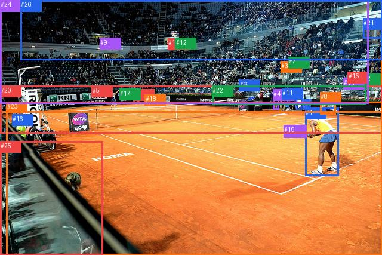

not_selected_0010

完整GT
| 主体 | GT谓词 | 客体 |
|---|
| 1 | looking at | 17 |
| 1 | holding | 19 |
| 1 | standing on | 23 |
| 8 | running on | 23 |
| 21 | on | 26 |
| 23 | beside | 25 |
预测top50
| 排名 | 主体→谓词→客体 | score | fused logit | 是否GT |
|---|
| 1 | #1 → holding → #19 | 0.996412 | 5.626414 | True |
| 2 | #11 → standing on → #22 | 0.988610 | 4.463573 | False |
| 3 | #21 → in → #13 | 0.979889 | 3.886157 | False |
| 4 | #4 → standing on → #22 | 0.975317 | 3.676634 | False |
| 5 | #4 → standing on → #23 | 0.972036 | 3.548477 | False |
| 6 | #8 → standing on → #22 | 0.969905 | 3.472832 | False |
| 7 | #26 → in → #13 | 0.966281 | 3.355395 | False |
| 8 | #4 → standing on → #20 | 0.965749 | 3.339204 | False |
| 9 | #12 → in → #13 | 0.965683 | 3.337184 | False |
| 10 | #8 → standing on → #23 | 0.964980 | 3.316190 | False |
| 11 | #10 → in → #13 | 0.963010 | 3.259416 | False |
| 12 | #8 → standing on → #20 | 0.962446 | 3.243690 | False |
| 13 | #0 → on → #23 | 0.961534 | 3.218744 | False |
| 14 | #26 → in → #24 | 0.961417 | 3.215597 | False |
| 15 | #12 → hanging from → #26 | 0.961348 | 3.213739 | False |
| 16 | #16 → on → #23 | 0.961104 | 3.207189 | False |
| 17 | #12 → in → #24 | 0.960402 | 3.188582 | False |
| 18 | #11 → standing on → #20 | 0.959036 | 3.153222 | False |
| 19 | #24 → in → #13 | 0.956120 | 3.081426 | False |
| 20 | #10 → in → #24 | 0.954734 | 3.048882 | False |
| 21 | #21 → in → #26 | 0.954020 | 3.032477 | False |
| 22 | #9 → hanging from → #26 | 0.953292 | 3.015996 | False |
| 23 | #10 → hanging from → #26 | 0.949057 | 2.924758 | False |
| 24 | #25 → on → #23 | 0.946206 | 2.867291 | False |
| 25 | #1 → on → #23 | 0.946140 | 2.865994 | False |
| 26 | #9 → in → #13 | 0.943423 | 2.813909 | False |
| 27 | #21 → in → #24 | 0.943309 | 2.811782 | False |
| 28 | #20 → on → #23 | 0.939752 | 2.747143 | False |
| 29 | #9 → in → #24 | 0.929064 | 2.572393 | False |
| 30 | #22 → in → #13 | 0.926864 | 2.539480 | False |
| 31 | #13 → in → #24 | 0.909648 | 2.309349 | False |
| 32 | #11 → looking at → #23 | 0.906844 | 2.275701 | False |
| 33 | #22 → in → #24 | 0.901589 | 2.215001 | False |
| 34 | #0 → in → #13 | 0.891403 | 2.105157 | False |
| 35 | #16 → on → #20 | 0.876218 | 1.957096 | False |
| 36 | #2 → in → #13 | 0.851996 | 1.750343 | False |
| 37 | #15 → in → #13 | 0.851560 | 1.746893 | False |
| 38 | #0 → in → #24 | 0.849591 | 1.731397 | False |
| 39 | #2 → sitting on → #15 | 0.846253 | 1.705513 | False |
| 40 | #7 → in → #13 | 0.845058 | 1.696355 | False |
| 41 | #22 → on → #20 | 0.843501 | 1.684510 | False |
| 42 | #2 → sitting on → #14 | 0.843352 | 1.683385 | False |
| 43 | #13 → looking at → #23 | 0.835213 | 1.623033 | False |
| 44 | #6 → in → #13 | 0.831497 | 1.596277 | False |
| 45 | #15 → on → #14 | 0.827275 | 1.566436 | False |
| 46 | #14 → in → #13 | 0.812506 | 1.466376 | False |
| 47 | #7 → looking at → #23 | 0.811067 | 1.456956 | False |
| 48 | #24 → looking at → #23 | 0.810471 | 1.453072 | False |
| 49 | #3 → looking at → #23 | 0.809989 | 1.449941 | False |
| 50 | #24 → in → #26 | 0.808918 | 1.442994 | False |
每个GT的采样、谓词与融合定位
| GT方向 | GT谓词 | 阶段 | slot | 最佳谓词 | GT词logit | pair logit | GT融合logit | GT词对内rank |
|---|
| #1→#17 | looking at | not_selected | None | None | None | None | None | None |
| #1→#19 | holding | hit50 | 0 | holding | 4.896918773651123 | 0.7294953465461731 | 5.6264142990112305 | 1 |
| #1→#23 | standing on | wrong_predicate | 74 | on | 3.0774879455566406 | -0.2251906394958496 | 2.852297306060791 | 2 |
| #8→#23 | running on | wrong_predicate | 138 | standing on | -0.3917102813720703 | -0.5055205225944519 | -0.8972308039665222 | 13 |
| #21→#26 | on | wrong_predicate | 48 | in | 1.9345107078552246 | -0.09108281135559082 | 1.8434278964996338 | 2 |
| #23→#25 | beside | wrong_predicate | 319 | in | -1.2606914043426514 | -1.3186839818954468 | -2.5793752670288086 | 3 |